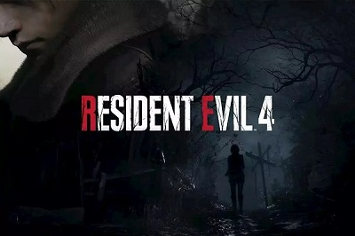

Menu do Site:
Resident Evil 4 Remake foi anunciado e teve sua data de lançamento marcada para 24 de março de 2023 durante o evento digital State of Play da Sony, nesta quinta-feira (2). A nova versão promete recriar e atualizar um dos capítulos mais aclamados da clássica saga de terror com visuais e jogabilidade renovados. O anúncio menciona também que Resident Evil 4 Remake terá conteúdo produzido para o visor de realidade virtual PlayStation VR 2 do PlayStation 5 (PS5). A Capcom confirmou que o jogo chega para consoles da nova geração, incluindo para PS5, Xbox Series X/S e PC, pela Steam.
No trailer é possível ver brevemente as novas versões do protagonista Leon S. Kennedy de Resident Evil 2 e Ashley, a filha do Presidente dos Estados Unidos. Toda a história do game gira ao redor de Ashley, que foi raptada e levada para uma vila isolada na Espanha. Leon, que se tornou um agente contra bioterrorismo, terá que resgatá-la a pedido do Presidente. O trailer mostra também um dos vilões mais marcantes da primeira parte do jogo, o gigante Bitores Mendez, que controla a vila inicial do jogo.
Resident Evil 4 foi lançado originalmente em 2005 para o GameCube com exclusividade temporária e depois convertido para várias plataformas, entre elas PlayStation 2, Nintendo Wii e até os consoles atuais como PlayStation 4 (PS4), Xbox One e Nintendo Switch. Em sua época, o game foi o primeiro a sair do padrão da série com maior foco na ação do que terror, como com os inimigos Ganados no lugar dos zumbis.
